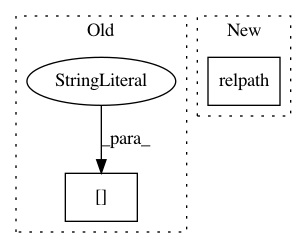

6d07ede8d6ba45bba6a7a4e900b51358b60ac720,mlflow/store/s3_artifact_repo.py,S3ArtifactRepository,list_artifacts,#S3ArtifactRepository#Any#,59
Before Change
infos.append(FileInfo(subdir, True, None))
// Objects listed directly will be files
for obj in result.get("Contents", []):
name = obj.get("Key")[len(artifact_path)+1:]
size = int(obj.get("Size"))
infos.append(FileInfo(name, False, size))
return sorted(infos, key=lambda f: f.path)
After Change
file_path = obj.get("Key")
self._verify_listed_object_contains_artifact_path_prefix(
listed_object_path=file_path, artifact_path=artifact_path)
file_rel_path = self.get_path_module().relpath(path=file_path, start=artifact_path)
file_size = int(obj.get("Size"))
infos.append(FileInfo(file_rel_path, False, file_size))
return sorted(infos, key=lambda f: f.path)
In pattern: SUPERPATTERN
Frequency: 4
Non-data size: 2
Instances
Project Name: mlflow/mlflow
Commit Name: 6d07ede8d6ba45bba6a7a4e900b51358b60ac720
Time: 2019-02-27
Author: 39497902+dbczumar@users.noreply.github.com
File Name: mlflow/store/s3_artifact_repo.py
Class Name: S3ArtifactRepository
Method Name: list_artifacts
Project Name: mlflow/mlflow
Commit Name: 4a2ba7221f29d8acfa1199d4341283d2ec8bdcc6
Time: 2018-12-21
Author: 39497902+dbczumar@users.noreply.github.com
File Name: mlflow/store/azure_blob_artifact_repo.py
Class Name: AzureBlobArtifactRepository
Method Name: list_artifacts
Project Name: tensorflow/datasets
Commit Name: 72dd67421c060a4ff991e0b7316deb1c429e0f23
Time: 2020-03-22
Author: thealmightylion.madhav@gmail.com
File Name: tensorflow_datasets/scripts/replace_fake_images.py
Class Name:
Method Name: rewrite_zip
Project Name: pantsbuild/pants
Commit Name: f652b7ca5dee09e6331187551019921e9c1a6f11
Time: 2013-11-25
Author: benjy@foursquare.com
File Name: src/python/twitter/pants/tasks/scala_compile.py
Class Name: ScalaCompile
Method Name: _compute_classes_by_source